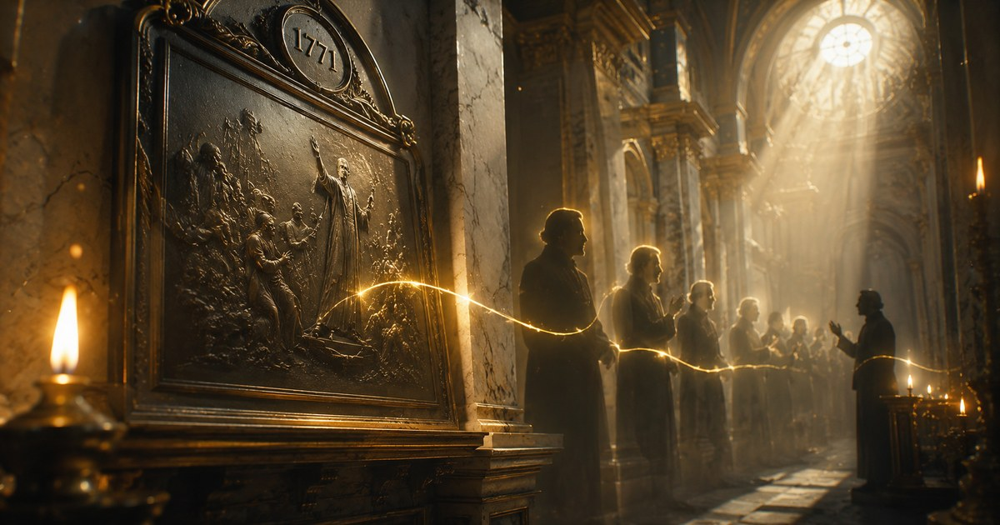

Трилогия · Часть I
Девиз проекта — Аввакум 3:19: «Господь Бог — сила моя; Он сделает ноги мои как у оленя и на высоты мои возведёт меня».
Для изучения Писания
Господь Бог Сила Моя
Материалы для вдумчивого изучения Писания: экзегеза, богословие, апологетика, переводы, биографии и непростые вопросы.
Недочитанные статьи
Ваше избранное
Статьи, которые вы отметили для себя
Быстрый старт
Маршруты чтения
Если хотите курс
Начните с серии
Нагорная проповедь — цельный маршрут чтения, где лучше идти по порядку.
Если нужен точный ответ
Откройте каталог
Экзегеза, апологетика, переводы и спорные вопросы — без необходимости читать всё подряд.
Если нужен визуальный вход
Идите в 3D-карту
История русского баптизма, события, маршруты, фигуры и связи между статьями.
Форматы библиотеки
Экзегеза и богословие
Разбор библейских текстов с опорой на оригиналы и академические источники
Непростые вопросы
О природе греха, страдании, сомнении и Божьем суверенитете
Апологетика и разбор заблуждений
Исторически выверенные ответы на вызовы культуры, псевдонауки и ересей
Переводы зарубежных материалов
Академические статьи с английского — то, чего ещё нет на русском
В планах
Гимны и их история
Богословское содержание классических гимнов и их исторический контекст
Тематические исследования
Глубокие разборы отдельных тем, понятий и богословских вопросов
Биографии служителей Открыт
Жизнь и труд пасторов, богословов и реформаторов в историческом контексте. Первый материал — Джон Гилл (1697–1771). Перейти →
Конфессии и Деноминации Открыт
История и устройство протестантских движений России. Первый материал — интерактивная «Карта Русского Баптизма» от истоков к современности. Перейти →
Главные входы
Ключевые серии библиотеки
Исторический проект
Биографии
Биографии служителей:
хроника верных
Жизнь и труд пасторов, богословов, реформаторов и миссионеров в их историческом контексте — от Ранней Церкви до наших дней.

Авторская серия
5 частей
Нагорная проповедь:
исследование в 5 частях
Сравнительное исследование Матфея 5–7 и Луки 6:17–49 — содержание, методология записи, адресат, богодухновенность, Закон и Евангелие.
Публикации
На телефоне листайте карточки вбок — так вход в материалы становится быстрее и короче.
Полка чтения
Начните с этих материалов
-
-
Трилогия · Часть II
Джон Гилл (1697–1771). Часть II: Учёный — экзегеза, система, иврит
-

Трилогия · Часть IIIДжон Гилл (1697–1771). Часть III: Наследие — полемика, память, наука
-
 Перевод с английского
Перевод с английскогоГерменевтическая оценка христоцентричной герменевтики
Грамматико-исторический метод оправдан Писанием и более чем достаточен для раскрытия славы Христа — без обходных путей христоцентризма.
-

Крайне ли испорчено моё сердце — если я уже верующий?
Разбор Иеремии 17:9–10: что значит «сердце обманчиво более всего» — и относится ли это к верующему? Экзегеза, богословский синтез и пастырское применение.

Скоро в библиотеке
Следующие большие серии
Новая серия
В разработке
Тайны человеческого сердца
Цикл экзегетических разборов о природе падшего и возрождённого сердца. Разбор Иеремии 17:9–10 и Римлянам 7.
Новая серия
В разработке
Тёмная сторона кафедры
Системный разбор искажений пастырской власти: власть без подотчётности, манипуляция Писанием, портреты авторитарности и пути к здоровой церковной культуре.
Разбор заблуждений
Короткий полочный ряд для самых частых апологетических входов.
Точный вход
Короткая полка разборов
-
 Исторические мифы
Исторические мифы«Код да Винчи»: блестящий триллер или историческая подмена?
Мария Магдалина, Никея, канон Нового Завета, Свитки Мёртвого моря, Наг-Хаммади, Приорат Сиона — полный разбор с позиций Писания и исторической науки.
-
 Тёмная сторона кафедры
Тёмная сторона кафедры20 антисоветов, как пастору разрушить своё служение
Практический и богословский разбор типичных ошибок пасторского служения — от первых перекосов сердца до авторитарной системы.


О проекте
то не лента быстрых заметок и не коллекция удобных цитат. Здесь собраны материалы для медленного чтения: авторские статьи, переводы зарубежных богословов, экзегетические разборы и ответы на вопросы, которые нельзя честно решить одним абзацем.
Библиотеку ведёт Фёдор Милованов. Переведённые материалы публикуются в ознакомительных целях и снимаются по запросу правообладателя.
Господь Бог — сила моя: Он сделает ноги мои как у оленя и на высоты мои возведёт меня.— Аввакум 3:19
Soli Deo Gloria